What happened?
At 9:15 PM, the rare Atlas of Lost Places disappeared from its display case inside Bellweather Library during a six-minute power outage.
Location: Bellweather Library
Every clue has a story.
The Detective's Archive
Select a case from the Case Files page to reveal its map and investigation file.
Case 001 · Open Investigation
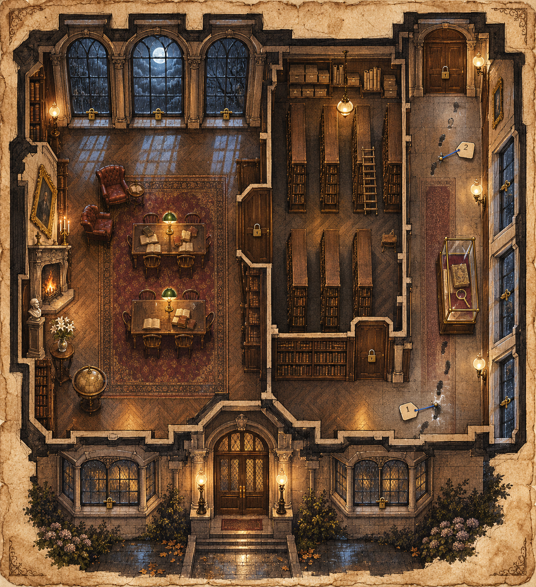
At 9:15 PM, the rare Atlas of Lost Places disappeared from its display case inside Bellweather Library during a six-minute power outage.
Location: Bellweather Library
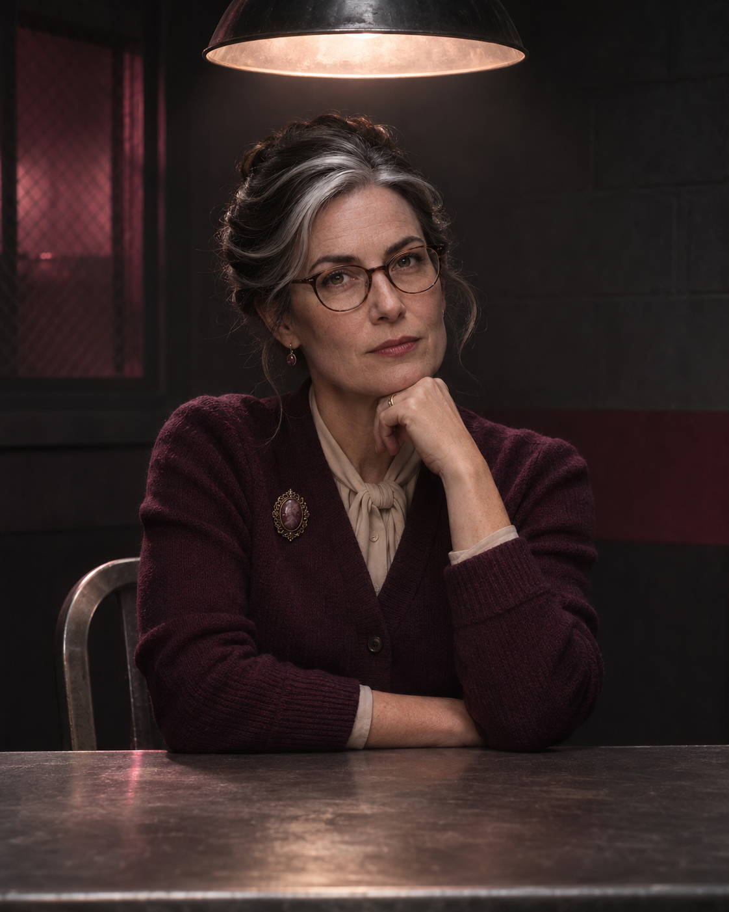
She knew the display case’s old lock had a faulty hinge.
He had requested access to the manuscript earlier that evening.
He was responsible for checking the library during the blackout.
| Clue | Found at | Details |
|---|---|---|
| Wet footprint | East corridor | A muddy print points toward the reading room. |
| Blue thread | Display case | A short piece of fabric was caught on the hinge. |
| Power log | The power failed between 9:12 PM and 9:18 PM. | |
Compare the footprint’s direction with the library entrance.
Case 002 · Open Investigation
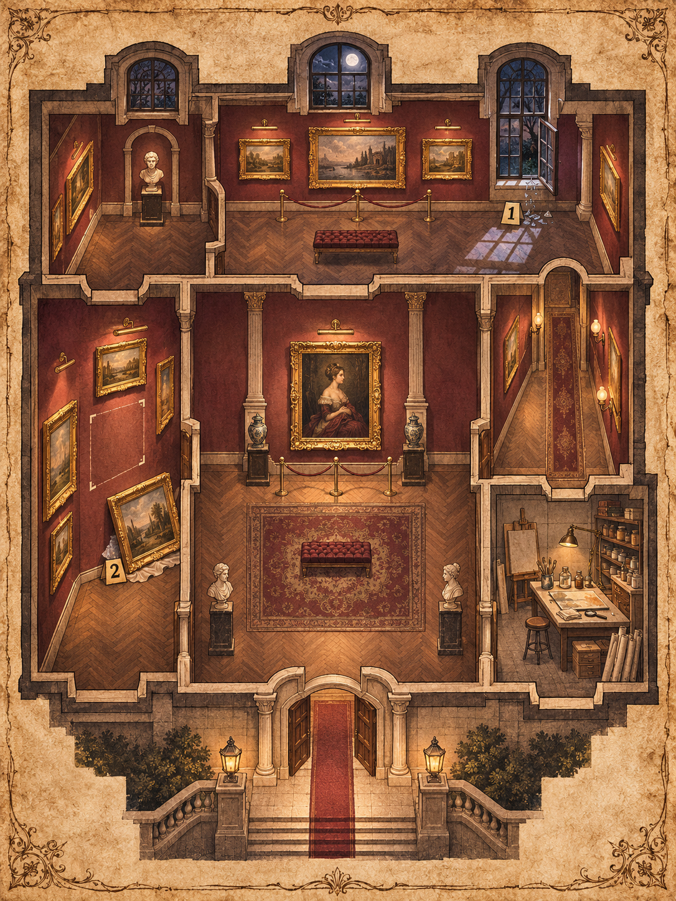
A portrait in the North Gallery seems to change position every night.
Location: North Gallery
She has the keys to every gallery room.
He worked near the portrait earlier that evening.
She was alone in the gallery after closing.
| Clue | Found at | Details |
|---|---|---|
| Open window | North Gallery | The latch has no sign of damage. |
| Loose frame | East corridor | Dust outlines a different position on the wall. |
| Paint fleck | It matches the portrait’s dark red frame. | |
Check whether the painting could have moved through a locked door.
Case 003 · Open Investigation
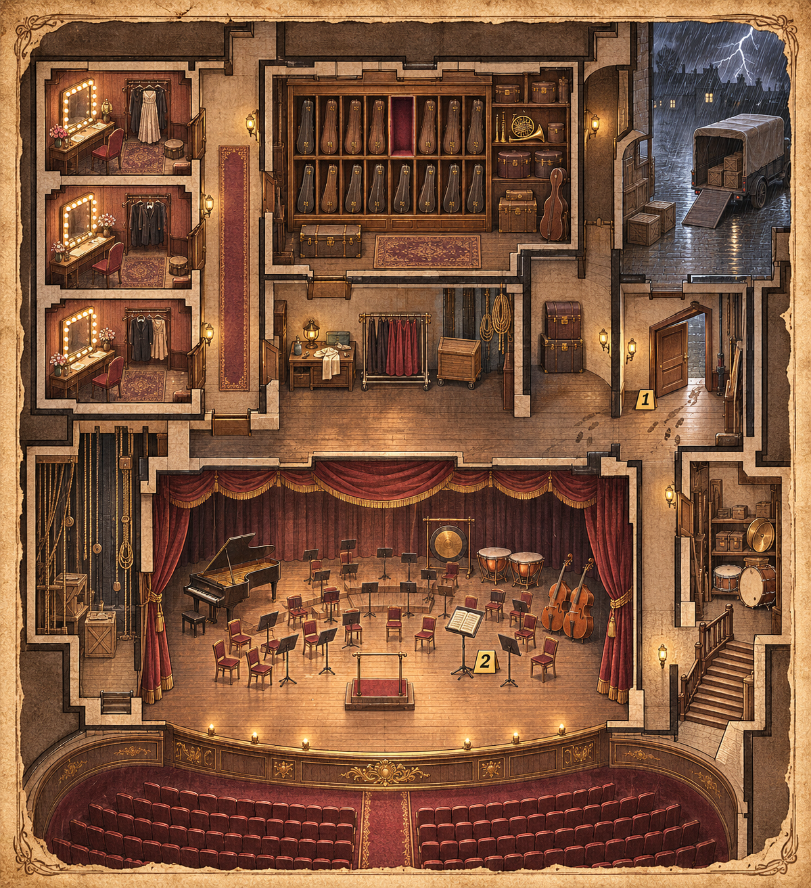
A priceless violin vanished shortly before the evening concert.
Location: Bellweather Concert Hall
He was the last performer to handle the instrument.
She could move freely between the stage and backstage rooms.
He was checking equipment near the side entrance.
| Clue | Found at | Details |
|---|---|---|
| Footprints | Side entrance | They lead toward the loading door. |
| Empty case | Backstage | The case was left open beside the instrument room. |
| Delivery cart | Its sign-out time is missing from the log. | |
Compare the time of the footprints with the concert schedule.
Case 007 · Open Investigation
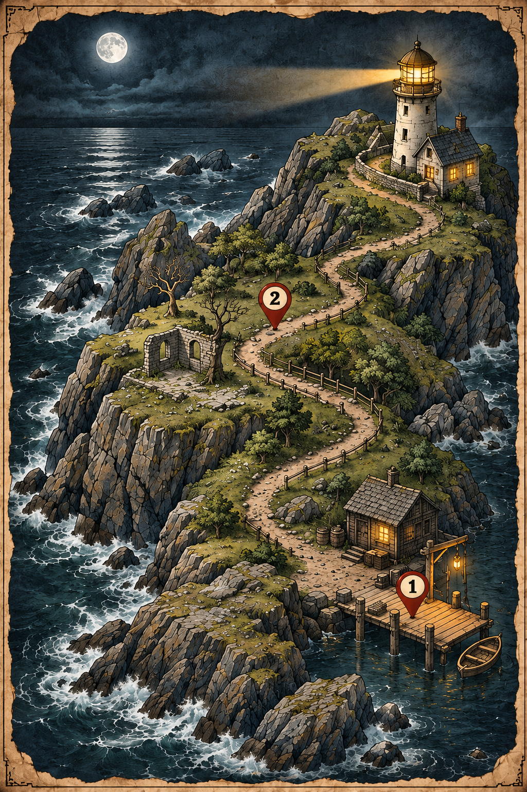
A strange signal appears from the abandoned lighthouse every midnight.
Location: North Point Lighthouse
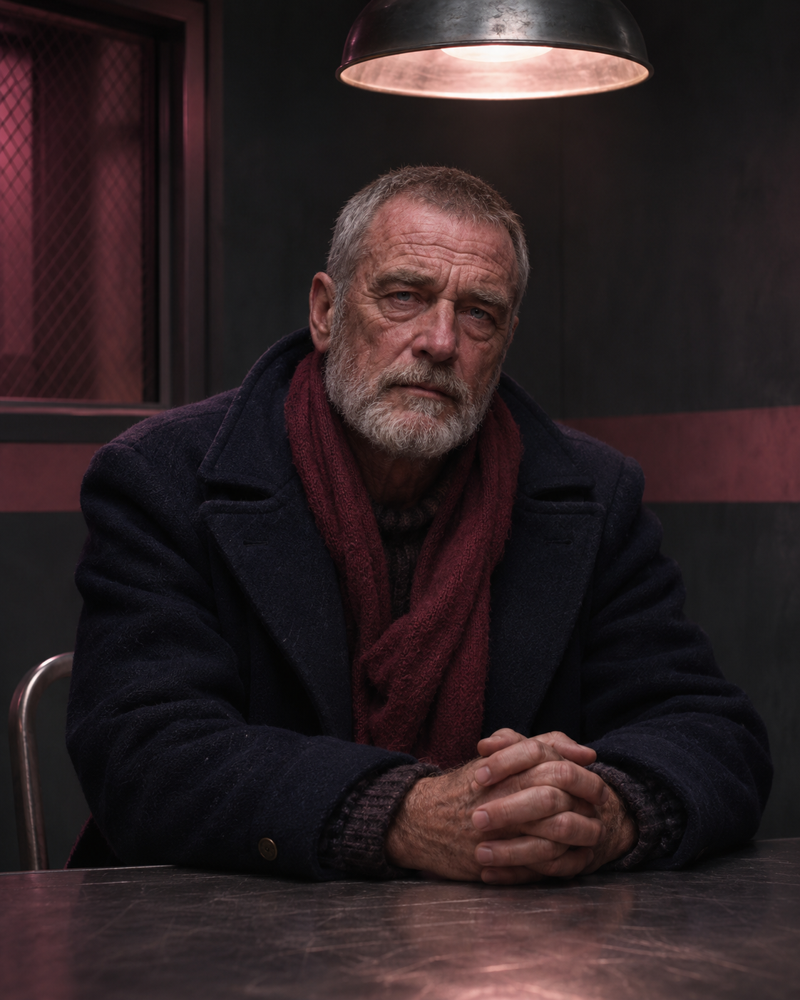
He knows how to operate the lighthouse signal equipment.
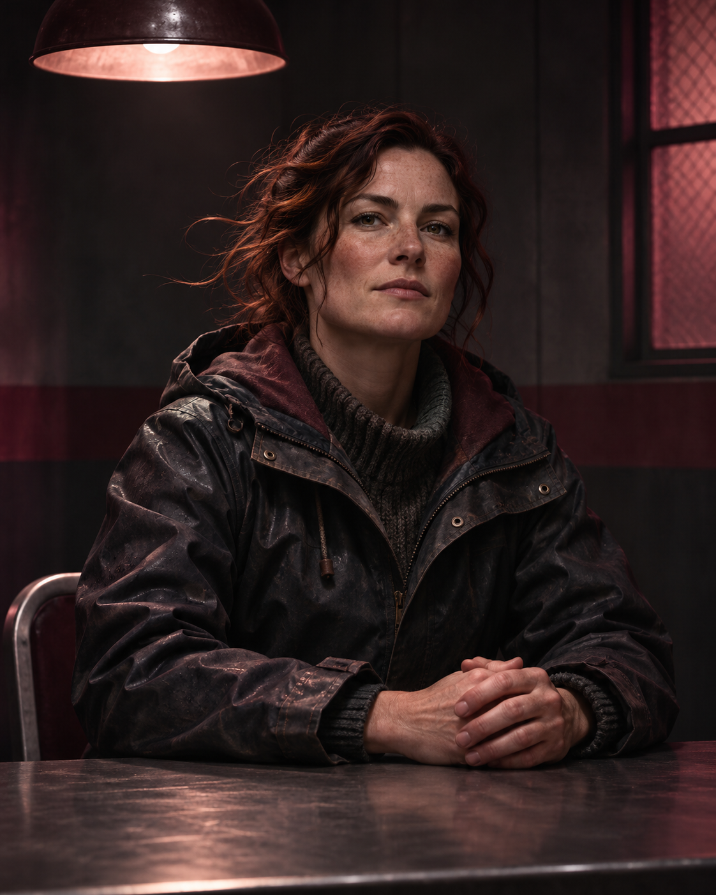
Her boat was seen near North Point after midnight.
He had been taking pictures near the coastal path.
| Clue | Found at | Details |
|---|---|---|
| Footprint | Coastal path | The print points toward the lighthouse. |
| Broken lens | Lighthouse steps | A piece of glass is missing from the signal lamp. |
| Radio note | A midnight signal was recorded on the same night. | |
Follow the path between the dock and the lighthouse.
Case 008 · Open Investigation
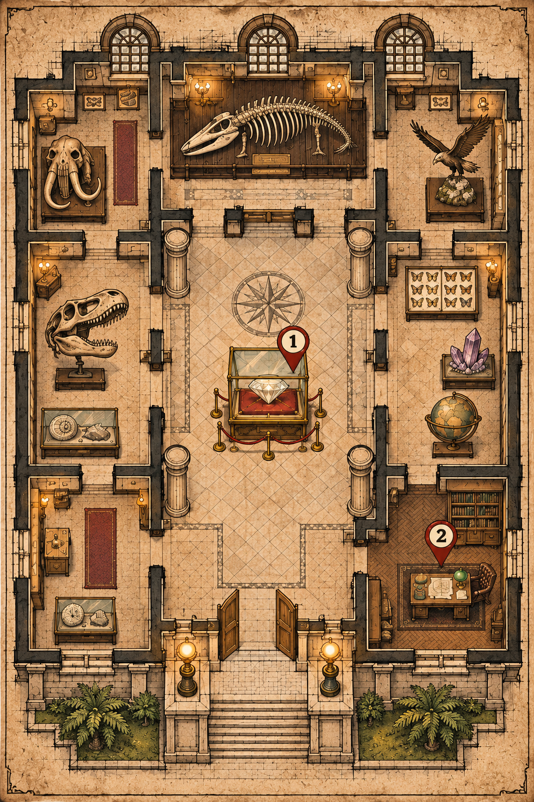
A valuable diamond disappeared while the museum was open.
Location: Bellweather Museum
She can open the diamond display case.
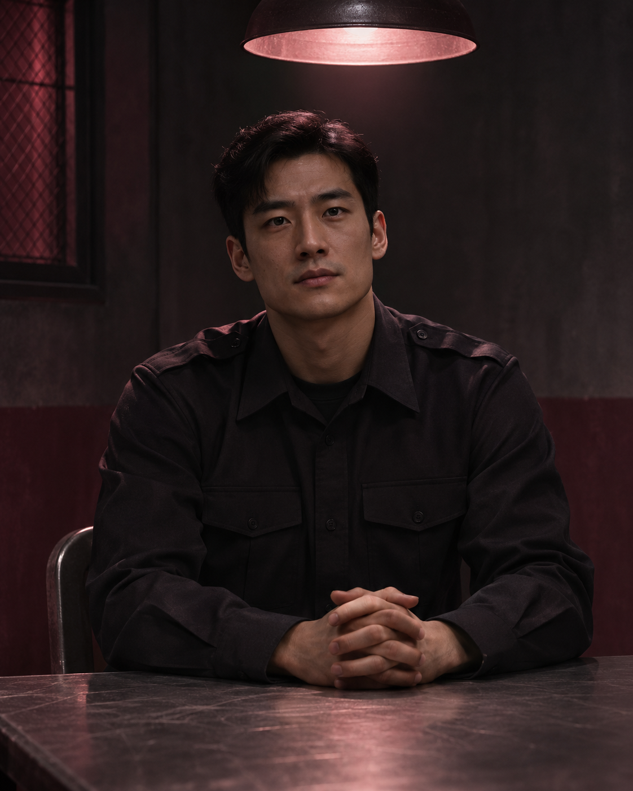
He carries the keys to the security office.
He studied the diamond closely during his visit.
| Clue | Found at | Details |
|---|---|---|
| Display case | Gem Gallery | The lock has no scratch marks. |
| Missing key | Security office | The spare key is not in its usual place. |
| Visitor route | One visitor passed the gallery twice. | |
Check which rooms connect the gem gallery to the security office.
Case 009 · Open Investigation
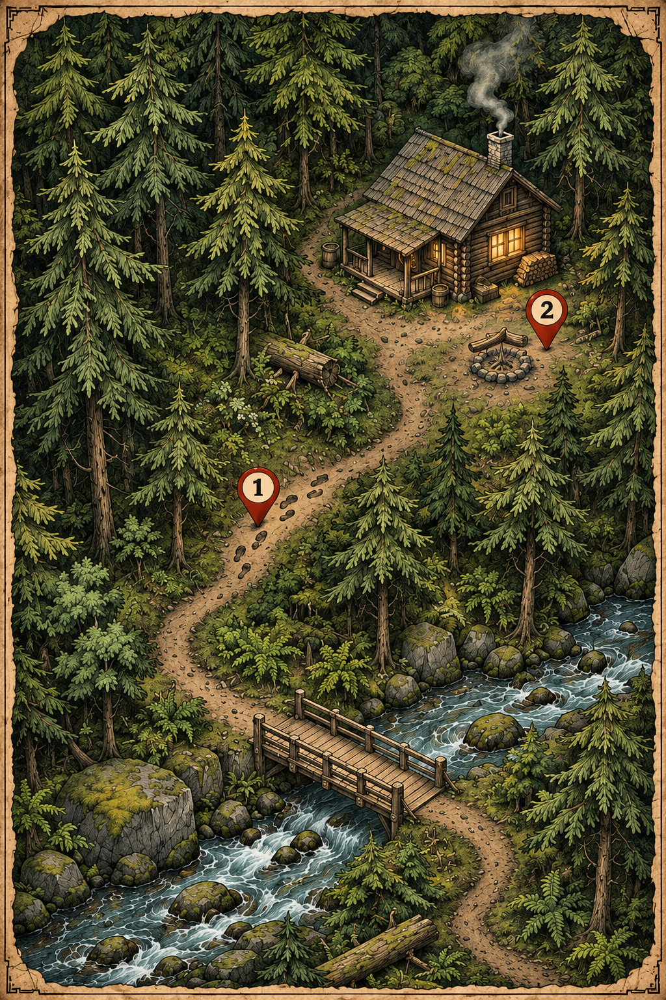
Mysterious footprints lead from an old forest cabin toward a hidden path beside the river.
Location: Blackpine Forest
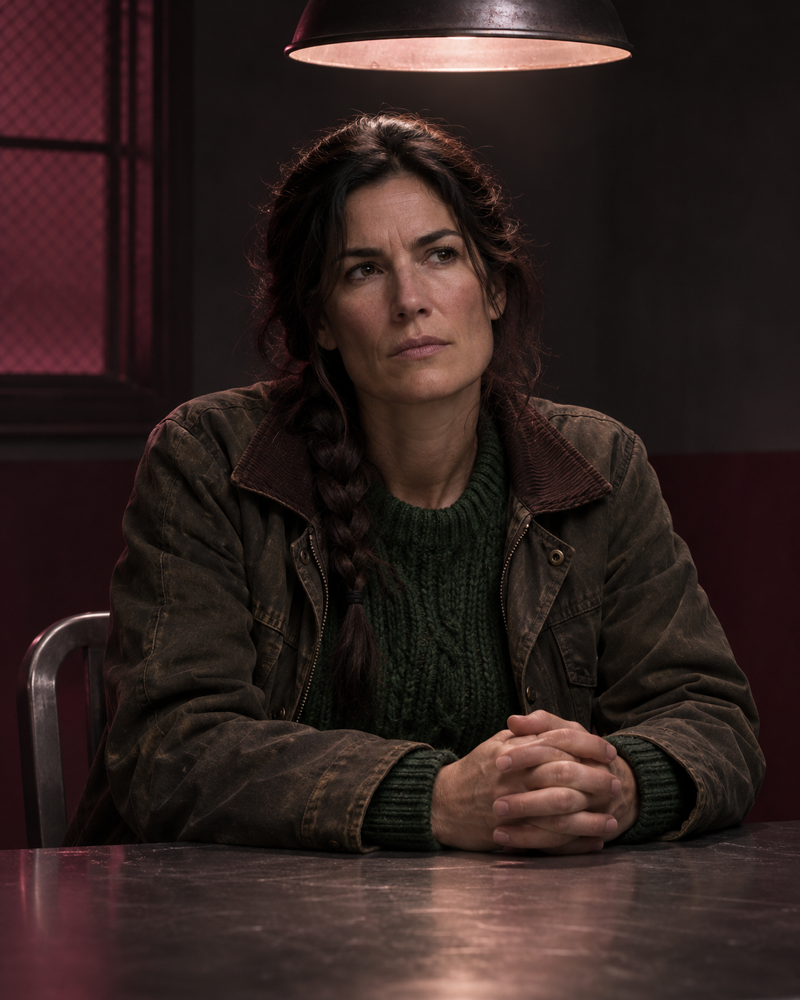
She knows every path around the cabin.
He carries a map of the forest trails.
He was seen near the river bridge that night.
| Clue | Found at | Details |
|---|---|---|
| Footprints | Cabin path | They continue toward the river. |
| Blue fabric | River bridge | A torn piece is caught on the railing. |
| Campfire | It was still warm when the ranger arrived. | |
Notice where the footprints cross the river trail.